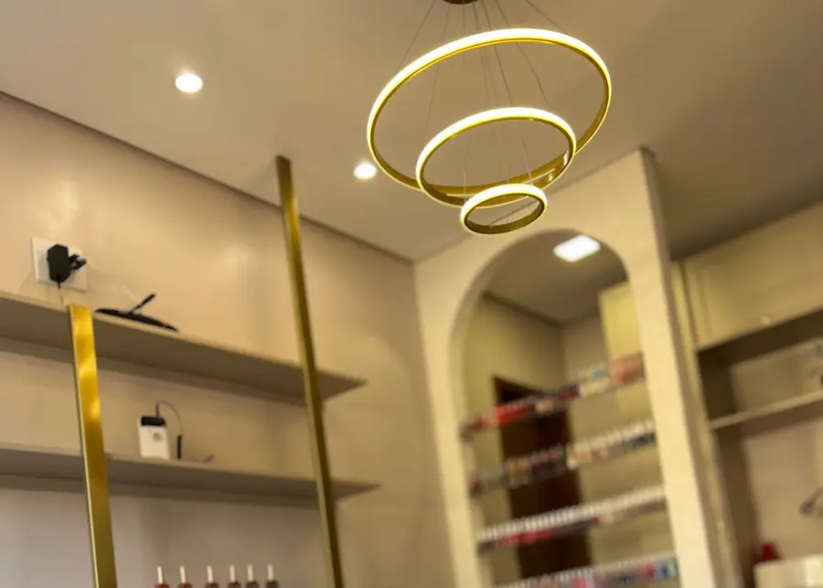
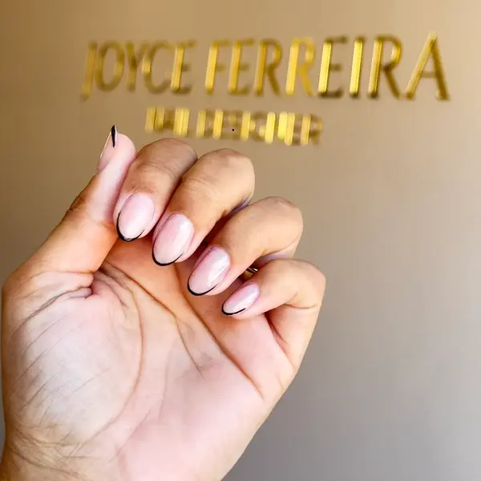
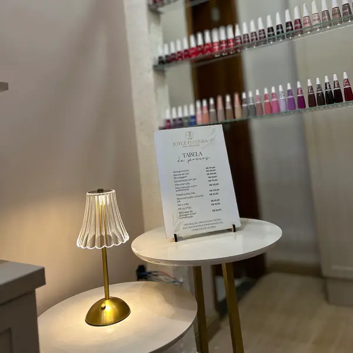
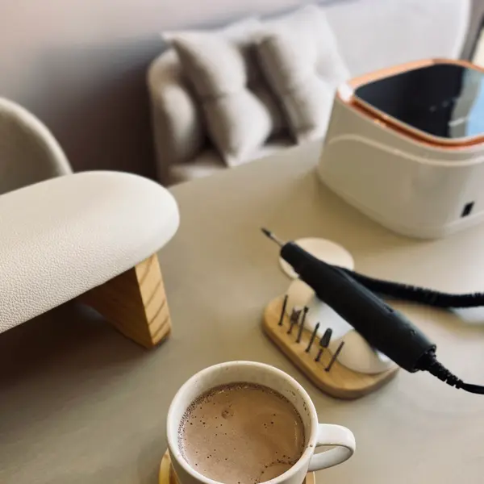
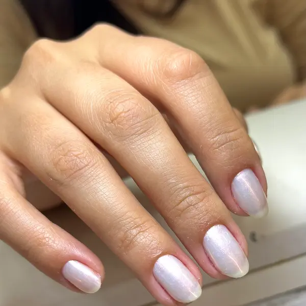
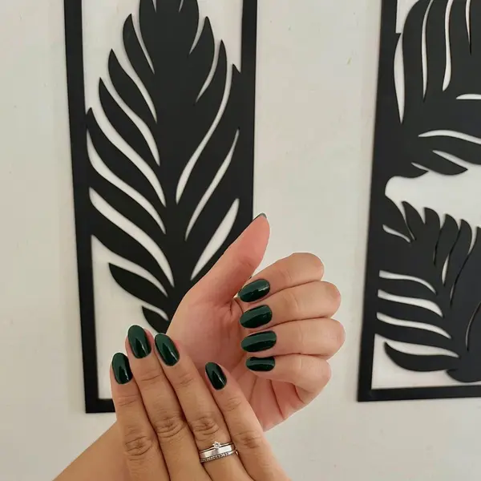
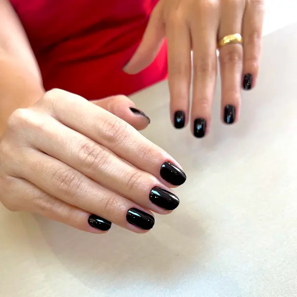

Para quem valoriza tempo e unha bem feita ✨
Alongamento e esmaltação em gel
5,0 no Google
- Avaliar no GoogleLeva 1 minuto e ajuda muito o studio
- Agendar meu horárioEscolha o serviço, o dia e a hora
- Falar no WhatsApp(31) 99141-9049
- Instagram@joyceferreira.nail · trabalhos e novidades
- Como chegarAv. Pref. Li Guerra, Praia · Itabira
Pagar com PixChave CNPJ
49.679.716/0001-56
Em nome de Joyce Souza Ferreira. Confira o nome antes de confirmar.
Trabalhos e studio






Bom saber
Horário
- Terça a sexta
- 8h às 19h
- Sábado
- 7h às 13h
- Domingo e segunda
- Fechado
Biossegurança
Instrumentos higienizados e esterilizados a cada atendimento, com materiais de qualidade.
Studio Joyce Ferreira Nail · Itabira/MG
Desenvolvido por Marcelo Ribeiro